何を見ても目は只、なにも知らずにそれを映すだけ。だから自由で無限の働きができるのです。
▼線光
ミツバオウレンは、高山のやや湿った草原、ハイマツや低木林の下、亜高山の針葉樹林や湿原に生える多年草。細長い根茎を横に伸ばして繁殖する。葉は根性し、厚くてつやがあり、3出葉。小葉はほぼ倒卵形で浅い切れ込みとふぞろいな鋸歯があり、ほとんど無柄。『細い茎ミツバオウレン身を立てる』
▼晴朝
イワキンバイは、山地の岩の上に生える多年草。根茎は木質で太く、よく枝を分ける。茎は細く、高さ10～30cm。3～5個の小葉からなり、下方の2個は小さく菱状卵形で先がとがり、ヘリにはとがったあらい鋸歯があり、裏面は粉白色を帯びる。茎の先端に集散花序をつくり、数個～十数個の花をつける。『山道の木陰に清しイワキンバイ』
▼余雨
サワトラノオは低湿地にまれに生える多年草。茎は、横走する地下茎から直立し、高さ40～80cmの円柱形で稜があり、無毛。葉は倒皮針状線形で互生、鈍頭～やや鋭頭、基部はしだいにせばまる。『雨の沼サワトラノオや雉に会う』
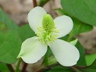
▼十薬
十薬との異名を持つ身近な薬草で知られるドクダミはハート形の葉や茎を乾燥させ、お茶にもなる。梅雨も近い季節、曇り空や暗い木陰にも映える白い花は、受粉しなくても実をつける。『ドクダミや緑のハート挿して白』
▼思い出せない
ヤマボウシは山地に生える落葉小高木。樹皮は暗灰色で紫色をおび、不規則にはがれ落ちる。葉は卵形で先がとがり、ふちはちぢれて波打ち、葉脈が目立つ。花は総苞が4片で白色。真の花は苞の中心に集合し緑色。果実は秋に赤く熟し食べられる。『思い出すもう忘れないヤマボウシ』
▼水円
苗代とはイネの種をまき、苗になるまで育てる田。そんな道端にもたくさん生えたのだろう、ナワシロイチゴは草花の様に見えるがりっぱな落葉低木のキイチゴ属で刺がある。田植えは終わり麦は刈られるこの時期、水田の水面をおたまじゃくしが水円を立てていた。『水田におたまじゃくしが波を打つ』
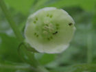
▼集う
アオホオズキは山地の谷沿いのやや湿り気のある林内にはえる多年草。茎はまばらに分枝し、高さ30～60cmになる。葉は長楕円形で先は細くとがり、へりに短毛がやや蜜に生える。葉腋に1～2個の花を吊り下げ花冠は淡緑色で、浅く5裂し、径約1.5cm。『見上げればアオホオズキに集う蟻』
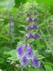
▼涼夏
タツナミソウは山野の日当たりのよい草地に生える多年草。茎は細く、直立し、葉は対生し、丸い心形で、両面に軟毛があり、へりに鈍い鋸歯がある。『優しげにタツナミソウや照れ隠し』
▼散りばめた
キジムシロは山野の草地に生える多年草。全体に毛がある。根生葉のうち頂小葉と隣の2枚は大きく、広倒卵形で鋭頭、基部はくさび形、ふちに鈍鋸歯がある。下方の小葉は卵形。托葉は白色でとがり、切れ込みがない。茎葉は3枚の小葉からなる。『黄集い地に散りばめたキジムシロ』
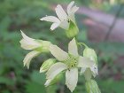
▼柔らかい
ヤワタソウは深山の谷の斜面の木陰に生える多年草。根生葉は1～2枚で円形か卵円形、光沢があり浅く掌状に7～13裂し、楯状に柄がつき、まばらに短毛が生える。茎の葉は1～2枚、小形で葉柄は短い。『柔らかく広げた花弁ヤワタソウ』
▼吊り花
ウリノキは山地の林下に生える落葉低木。葉には長さ4～10cmの葉柄がある。互生で質は薄く柔らかい。裏面に軟毛が生える。ほぼ円形で長さも幅も10～20cmあり、3～5浅裂する。『ウリノキに花弁巻いて吊り下がる』
▼遠景
シラネアオイは山奥の谷沿いの木陰に群生して生える多年草。地下茎は太く横にはう。茎は直立して花時に高さ20～30cm。花後には40～60cmとなる。有柄の葉2枚と無柄の苞葉1枚がある。葉身は腎円形で5～7中裂、裂片はさらに2～3中裂し、へりに鋭い鋸歯、両面に軟毛がある。表面で脈がへこみ、裏面に網目状に浮き出る。茎頂に紫色の花を横向きに1個つける。がく片は4枚、だ円形～ひし形で鈍頭、紫色で花弁のように見えるが花弁はない。雄ずい多数、雌ずいは2本で、下部で融合している。開花は日陰の場所の方が早いと言われる。『地にシラネアオイ天然通じ会う』
▼風車
カザグルマは湿ったやぶや林緑に生える。葉は３～５枚の羽状複葉で庭にも植えられるつる性の半低木。長い葉柄で他のものにからみつくセンニンソウ属。がく片８枚で花びらはない。直径は１２ｃｍほどあり見事である。『葦野原オオヨシキリとカザグルマ』
▼千差万別
ツユクサは平地や丘陵の路傍、林のへり、草原、耕作地のまわりなどに生える1年草。茎の下部は這い、多数分岐し、節から根を出し、上部は立ち上がる。茎は卵状披針形か披針状長だ円形で無毛。葉柄の基部はさやとなり、へりに毛が少し生える。苞は広心形で内側に折れる。がく片3枚、花弁は3枚で、うち2枚は青色の円形で大きく、他の1枚は非常に小さい。蜜がなく虫はあまり寄ってこない。花が萎む時、長いおしべが巻かれて苞に納まり同花受粉する。苞の中には雄花が１つと雌雄同花の花３つがあり、初め雄花ともう1つが縦に並んで咲き、雄花は午前中に落ちてしまう。後は1日1花。1つの雌しべに飾り花が２つある。千差万別でありながら、宇宙の主人公となって生きているのは同じ。
▼芳醇
テリハノイバラは日当たりのよい山野、川原、海岸などに生える。ノイバラに似るが、花は一回り大きく、葉には光沢があり、茎は地を這う点で見分けることができる。芳醇な香りはさすがバラです。『鬼怒川にテリハノイバラ香り咲く』
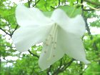
▼見頃
ゴヨウツツジの葉は５枚輪生する。別名シロヤシオとよばれ、中禅寺湖から高山にかけて多く見られた。とはいっても花期はすでに終わっていて極まれに残っていた花を撮影した。『中禅寺高山道に散るヤシオ』
▼保護
クリンソウは、日本の渓流沿いの湿地などに生える無毛の多年草。花の色は白から赤紫まで変化に富んでいる。日光中禅寺湖千手ヶ浜の群生地は、狭いながらも長野の上高地のような風土を持ち合わせている。鹿と人から、ネットとハイブリッドバスで一帯を保護している。『湖に入る沢に添うクリンソウ』
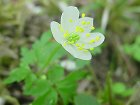
▼はっきりする
サンリンソウは３枚の小葉からなるが、側小葉は２深裂し、５枚の葉で形成されているように見える。花茎を３本立てることはない。『違ってもサンリンソウは迷わない』
▼舞い降りる
小さな白い糸のような花とハート形の葉が特徴のマイヅルソウ。確かに、鶴が羽を広げたような簡素で美しい形をしている。『降り立ちてマイヅルソウは背筋張る』
▼白清く
ツマトリソウは亜高山帯の針葉樹林の下や高山帯などに生える茎の高さ10～20cmの多年草。葉は全縁で皮針形で葉は互生であるが、茎の頂上は輪生状に集まる。語源を調べてみると花びらの先が褄取《つまど》った形をしているから。『白清しツマトリソウの形見る』
▼木陰に紅
沼原湿原へ向かう道路脇に赤い花を咲かせるヤブウツギが多く見られる。高さは２～３ｍで枝は灰色。葉の楕円形または卵状長楕円形で先端は尾状にとがり、ふちには細鋸歯がある。『ヤブウツギ横目に向かう沼原』
▼上を向いて
ミヤマニガイチゴは高い山地の日当たりのいいところに生える。刺はまばらで小さい。葉は長さ４～８ｃｍの卵形で３深裂し、先はとがる。本年枝の先に上向きに花を咲かす。『ニガイチゴ小さく上に背伸びして』

▼血止め草
チドメグサは少し湿った道端や庭の隅などに生える多年草。茎は地上をはい、節から葉と根を出す。葉は互生し基部に小形の褐色の托葉がある。形は腎円形で浅く5～7裂し、裂片は半円形で小数の低い鋸歯がある。葉腋に花梗を1本ずつ伸ばし、先端に3～10個の淡緑色の花が散形花序をなして咲く。葉をよくもんで切り傷につけると出血が止まる。『足元を花突き上げてチドメグサ』
▼湿原の星
タテヤマリンドウはハルリンドウの変種で、高山の湿地に生える。根元に卵状楕円形の葉をロゼット状に広げ、ハルリンドウよりも葉や花茎の数も少なく小さい。『湿原に星ちりばめてハルリンドウ』
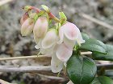
▼低く咲く
コケモモは高山や寒帯に生え、葉は密に互生する常緑小低木。タテヤマリンドウも小さいが、その写真を撮っていて見つけられたのだから、面白い。赤い実は食用になるそうです。『草影に隠れコケモモ岩上這う』
▼蒼蒼
ズミは日当たりのよい山野に生え、高さ10m程の落葉小高木。若枝には軟毛があり、花のつく枝の葉は長さ3～8cmの長楕円形または卵状長楕円形で、基部は円形またはくさび形。ふちには細鋸歯があり、両面に軟毛がある。直径6～10mmの赤い果実をつける。『蒼蒼と湖畔近くにズミの花』『思い出を手繰り寄せ会うズミの枝』
▼草原の風
ミヤマキンポウゲは高山帯の草地に群生する多年草。花弁は広倒卵形で表面は光沢が強い。根生葉は数個あって３～５深裂し、裂片はさらに２～３裂して両面に伏毛が多い。がく片は舟形で外側に長い毛がある。『草原の風に首振るキンポウゲ』
▼山の春
木道のあちこちに咲くミヤマツボスミレは、亜高山帯から高山帯の湿地に生える多年草。根生葉と茎上に円形か腎形をし、基部は深い心形でへりの鋸歯は低く無毛または表面はまばらに毛がある。『木道にミヤマツボスミレ遅き春』
▼蓮華
高原に群生する大柄のレンゲツツジは人気物。私は小さな花に興味を持って写真を撮っていると…『虫でも採っているんですか？』と話かけられる。ぐぐぅ～(^_^;)おたまじゃくしやサンショウウオ、昆虫も好きです。『山を越え丘に群れ咲くツツジたち』
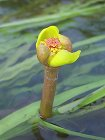
▼水路
シモツケコウホネは、沼や小川に生える多年草の水生植物。根茎は太く、地中を横に伸びる。葉は水中葉と水上葉があり、根茎の先から出る。水中葉は細長くて薄く半透明でへりは波状。水上葉は長卵形ないし長楕円形で鈍頭、基部はやじり形で全縁、質は厚く、表面は光沢があり、裏面は淡紫褐色。水上葉は水中から突き出るものと、水面に浮いて浮水葉となるものがある。コウホネの名は、白い根茎が骨に見えることから。『清らかな水路コウホネ突き出でる』
▼夫々に味がある
草花が茂る間隙を縫って長い茎を伸ばし花圃を持ち上げ顔を出す。花にまじってむかごがついている場合が多い。そんな花に付けられた名前はノビル。葉の断面は三日月形。鱗茎と葉は食用になる。『草茂る間隙に顔出すノビル』
▼小さな
ヨツバムグラは山野や道ばたなどに生えるちいさな多年草。茎は細く、四角形で葉は4枚が輪生する。花冠は深く4裂し、径役1.5mm。雄ずい4本、花柱2本。『すっと立ち脇に佇むヨツバムグラ』
▼開花待ち
ナルコユリは丘陵地や山地の疎林に生える多年草。花は筒形で先が浅く6裂する。秋の田で雀追いにつるす鳴子に、下垂するその花の姿が似ているところから、鳴子百合といわれる。『雨しずく垂らしうつむくナルコユリ』
▼そよ風吹く
高山の湿った岩山に生えるユキワリソウ。汗だくになって登った山でこの花に出会い、眺めているうち、涼しいそよ風に汗も引き、座り込んでお茶を飲み遠景を眺めた。『腰下ろしユキワリソウと望む山』
▼非思量
暗い林の淵にビーズの様な輝きと淡い香り漂わすコアジサイ。今、私の触れているあらゆるものは考え方ではない。考え方に囚われないから自由に動く。『私はどこへ行ったらいいんでしょう？』心の運転をやめて見る。
▼庚申山
南総里見八犬伝で戦いの場として登場する庚申山。名岩、奇岩も多く険しい山道が多い。この地で発見され命名されたコウシンソウは有名で、この花を見に訪れる登山者は多い。山頂の手前３００ｍ程手前の岩場とお山巡りコースの岩場２箇所で見られた。『岩壁に連なり揺れるコウシンソウ』
▼道脇に咲く
ショウキランは深山の針葉樹林の下やササ原に生える多年生の腐生植物。登山道のわき道で見つけたが、随分踏まれやすいところに咲いたものと残念に感じたが、帰り道、石で囲いができていた。『笹原の道脇照らすショウキラン』
▼照らされて
ヤマオダマキ。オダマキの花を初めて見たとき、もちろん園芸店ではあるが、何とも奇妙な造りの花だと関心したが、自然に咲くこの花を見つけたのは初めて。日当たりの良い場所にすうっと立っていた。『オダマキに初めましてと頭下げ』
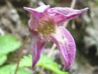
▼岩に這う
ミヤマハンショウヅルが岩の上からひょっこり首を下げ覗き込んでいる。ちょっと薄ぼけたムラサキ色で枯れたような色合いが掴みどころなく、しげしげと見入ってしまう。『岩山でハンショウヅルへ背伸びする』
▼公けな法則
河原に近い土手では、遠目ではわかりにくいが、お花畑になっているところが多い。
そこにウツボグサがいた。思いとは関係なく、こう出来上がっている。いいの悪いだのは、ただその時の都合で名前を付けただけのことです。
▼受け止めない
鬼怒川に近い土手に咲くハマエンドウ。海岸の砂地を好み茎はつる状に伸びる。手を一つ動かしてみても、動かしただけ。前のものをとっておくことも、かまえることも、次の様子を受け止めもしない。その時からすぐに始まり、終わっている。
▼
カラマツソウは、亜高山帯の草原に生える多年草。白色または淡紅色を帯び、パッと破裂したよに柔らかな多数の花をつける。和名は花の形をカラマツの葉に見立てたもの。見たといっても次の瞬間、目には何も残っていない。残っていたら邪魔になる。『目にとまる夏の草原カラマツソウ』
▼君の名前は
コカモメヅルは山野の草地などに生えるつる性の多年草。葉は対生。花序はよく分枝し、大きく散開して葉と同じかまたはそれより長くなる。写真は花序が短く、色も暗褐色でもない。同一だと思われるが、2週間前には花弁が4枚のものも見た。『困ったなあ君の名前はカモメヅル？』
▼思いとは違う
フナバラソウは別名ロクオンソウとも呼ばれ、山地の草地に生えるまれな多年草。全体的に密に軟毛がある。茎は直立し、高さ40～80cm。葉は対生し、だ円形～卵形、先は急にとがるかまたはややまるい。裏面には脈が浮き出している。花冠は濃褐色で内面は無毛、外面には短毛がある。副花冠はだ円形。袋果は広皮針形で密に毛がある。『気がつけば華盛りなりフナバラソウ』
▼夏至
桔梗は乾いた日当たりのよい山野の草地に生える多年草。葉は互生し、長卵形～広卵形でへりには細かい鋸歯があり花冠は鐘形。雄ずい5本。雌ずい1本の雄性先熟花。秋の七草に『朝顔』の名で詠われる。『照りつける野に朝顔の立ち姿』

▼花之江の郷
アサザは池や沼に群生する多年草の水生植物。葉は水面に浮かび、卵形または広だ円形で表面につやがあり、へりに波形の鋸歯がある。アサザの住む自然環境はなくなろうとしている。『生きること悩みもせずにアサザ浮く』
▼一薬草
イチヤクソウは丘陵地や山地などの林の下に生える常緑の多年草。全草に毛がなく、葉は2～5枚し、広だ円形でへりに低い不明の鋸歯がある。雄ずいは10本、雌ずいは1本で曲がった花柱がある。『草陰に花弁散る一薬草』
▼柿色
カキランは山野のやや湿り気のある谷すじの斜面などに生える無毛の多年草。葉は2列に互生して7～8枚、卵状皮針形で中央部の葉が大きく、先はとがり基部は茎を抱き、脈がはっきりしている。『出来不出来つかずカキラン生まれ出で』
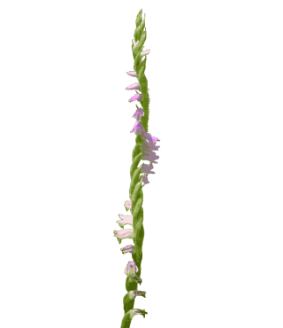
▼風に揺れて
ネジバナは日当たりのよい原野、丘陵の草地、田のあぜ、公園の芝生などに生える多年草。とくに芝生を好み、最も身近な野生ランである。地下に白色多肉の紡錘状の根が3～4本ある。葉は広線形で先はとがり、根生または茎の基部につく。茎は直立し、先は細長い穂となり多数の小さな花を開く。桃紅色の花がらせん状にねじれて花軸を巻く得意な姿で、他の植物と見誤ることはない。花は横を向き、鍾形で平開しない。色は、ふつう濃い桃色であるが、南方へ行くと色の淡いものが多い。がく片・側花弁は卵状披針形、唇弁は倒卵形で色が淡く、先が外方へそり返り、へりに細かいしわがある。ラン科植物の常で、種子は粉のように細かく、容易に風に運ばれる。実物を見るとどうする事も出来ないほどきっちりとしています。頭の中で考えてこうあったらいいなといくら考えても結論は無いものです。
▼耳を澄ませて
クサフジは山野の明るい草地に生えるつる性の多年草。茎は多少角ばりやわらかく、表面に軟毛がある。葉は互生し、羽状複葉。ほとんど柄がなく18～24枚の小葉からなり、披針形～広卵形。頂小葉は巻きひげとなる。托葉は披針形で2裂する。葉は乾燥しても緑色である。花は青紫色の蝶形花で葉腋より柄をのばし、その先の片側に多数の花を密生させる。果実は平たい長だ円形で、5個内外の種子がはいっている。”耳を澄ませて”みて下さい。あらゆるものが感じとれます。自分と環境をわけていた思いさえも消えて…。
▼流転
コモチマンネングサは原野の草地、道ばた、田のあぜなどに生える2年草。茎は下部が地をはい、枝をよく出し、上部は立ち上がる。葉は上部のものは互生し、基部のものは対生する。むかごをつくる。『歳月を流れし子持ち満年草』
▼淡紅色
ママコナは山地の日光の差し込むやや乾いた疎林の中などに生える1年草。茎は日当たりがよいと赤味を帯び、30～60cm。葉は対生し、長卵形で先は鋭くとがり、基部はまるく、全縁。ママコナは飯子菜の意で、種子が米粒に似るからとも、下唇の斑紋を米粒に見たてたものとも言われている。『草茂る地にママコナの紅挿して』
▼着飾る
ユキノシタは山間の湿った岩の上に生える半常緑の多年草。全体に長く開出した毛が密に生える。葉は根生し質厚く腎円形、基部は心形、下面は赤紫色で粗毛がある。『うつむいてやがて横向くユキノシタ』
▼円描く
タイミンガサは深山の湿った落葉樹林下に生える多年草。ふつう小さな葉が3枚、下部には楯状に長柄のある大きな葉がある。葉柄には翼がなく、基部は短い鞘となる。葉身は大きな円形で、9～14個の裂片に切れこみ、へりにふぞろいな鋸歯がある。『深緑のタイミンガサや円描く』
▼自分のことは
益子町地蔵院綱神社の木々に覆われ薄暗い参道脇で寄り添ってくっつき合った小さな花（ツルアリドオシ）をみつけました。疑うことが出来ない、信じようという必要もないほど確かなこと。身近にありながら考え方を離れないと自分自身は見えない(はっきりしない)ものです。

▼初夏の風
ハクサンフウロは亜高山帯から高山帯下部の日当たりのよい草原に生える多年草。枝の先に花を２個ずつ付ける。初夏の風が心地よい。『草原で初夏風に揺れフウロソウ』
▼風紀
コバイケイソウは、大柄な体に大きな花房をつけ、高山の日当たりのよい湿った草原に生える多年草。花は年により咲かないこともあるそうです。『大きな葉コバイケイソウ風紀たる』
▼円錐様総状花序
ヤマブキショウマは、山地に生える多年草。茎は直立し高さ30～100cm。葉は2回3出葉。縁に重鋸歯があり、側脈の数が多く、平行して走って鋸歯に達していることが、アカショウマやトリアシショウマとの区別点になる。『白い花蜜につけヤマブキショウマ』
▼目線
キソチドリは、深山の針葉樹林帯に生える多年草。茎には稜線があり、やや細い。葉は１枚が大きく、茎の下方につく。楕円または長楕円形で、先は丸いか急に短くとがり、やや茎を抱く。茎の上部に小さな皮針形の葉が１～３枚ある。『目線さげ覗き見るなりキソチドリ』
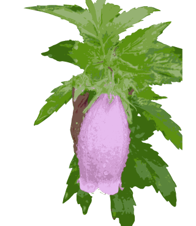
▼火照る
ホタルブクロは山地や丘陵地に生える多年草。茎は直立し、高さが40～80cmになる。根生葉は卵心形で長い葉柄がある。茎の葉は互生し、披針形または卵形でへりに鈍い鋸歯がある。葉柄に翼があり、上方でしだいに無柄となる。花冠は鍾形で長さ約5cmとなり、下を向いて開く。花の色は濃い赤紫のものから白まで変化が多い。内面に濃紫色の斑点が散在する。がくは5裂し、裂片と裂片の間に小さな副裂片が反曲する。雄ずい5本。花柱1本。つぼみの時、雄しべが先に熟し花粉をはき出し花柱につけ、花が咲くと花蜂が体につけて他の花へ運ぶ。花粉がなくなる頃柱頭の先が3裂して他の花から花粉を受け取る。『手の平にホタルブクロや火照る笑み』
▼定家葛
テイカカズラは、つる性の常緑低木。葉は対生し、長さ3～7cmの楕円形または狭楕円形で、ふちは全縁。革質で光沢がある。茎から気根を出し木や岩を這い登る。花は芳香があり、おしべは5個。果実は長さ15～25cmの線形の袋果。熟すと縦に裂け、線形で冠毛のある種子を多数飛ばす。『香り立つ渓流沿いの定家葛』
▼留まる
サワギクは深山のやや湿り気のある林の下に生える2年草。茎は縦に稜があり、高さ50～90cm。葉は互生し、卵状長楕円形で羽状に深裂し、へりにあらい鋸歯がある。『サワギクに輝き留まる帰り道』